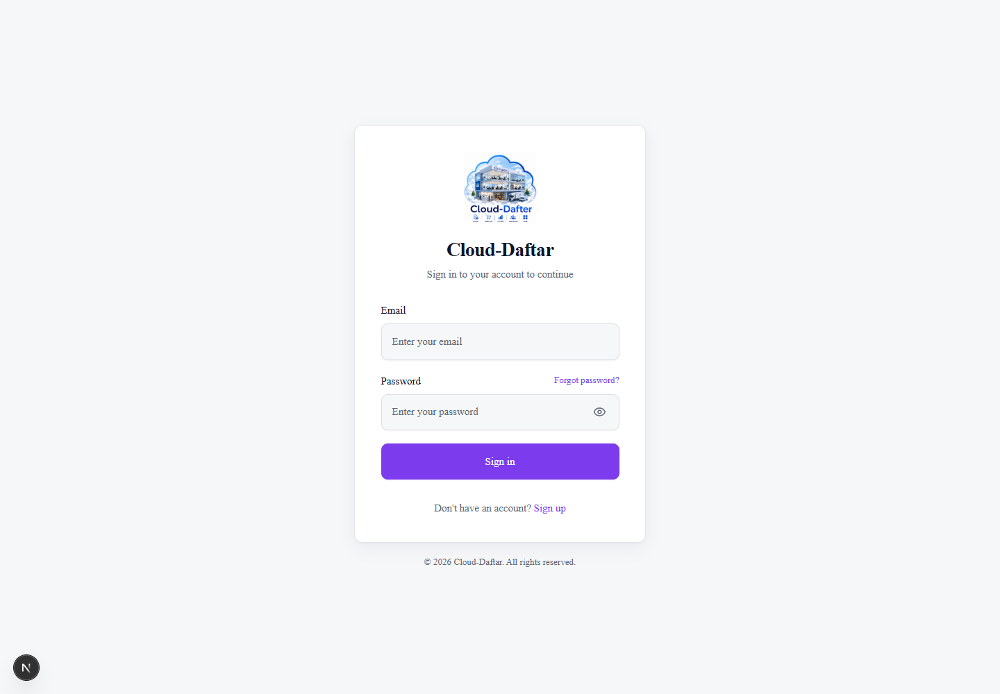
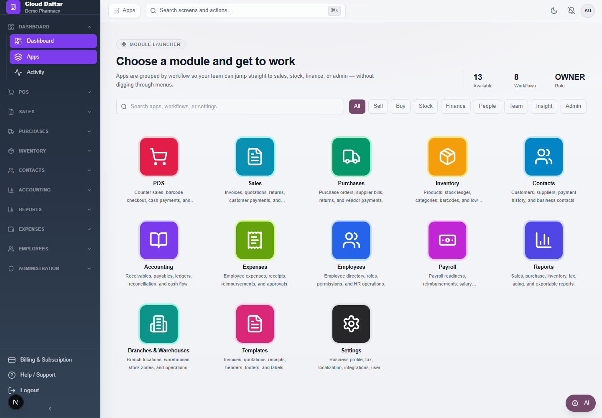
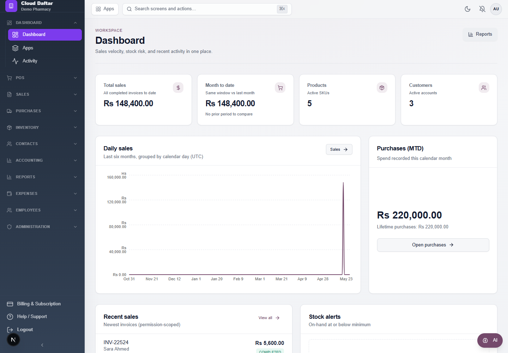
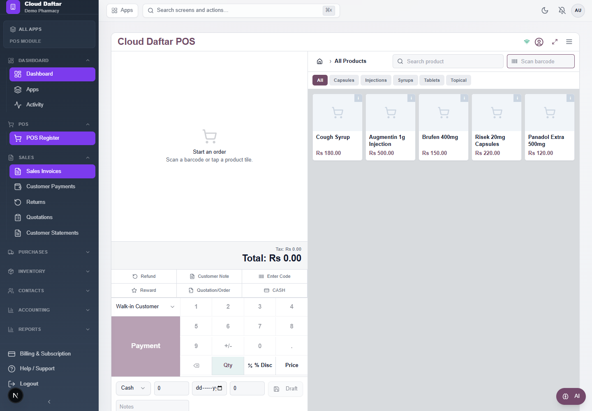
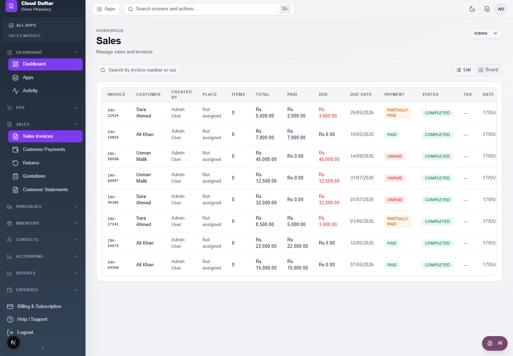
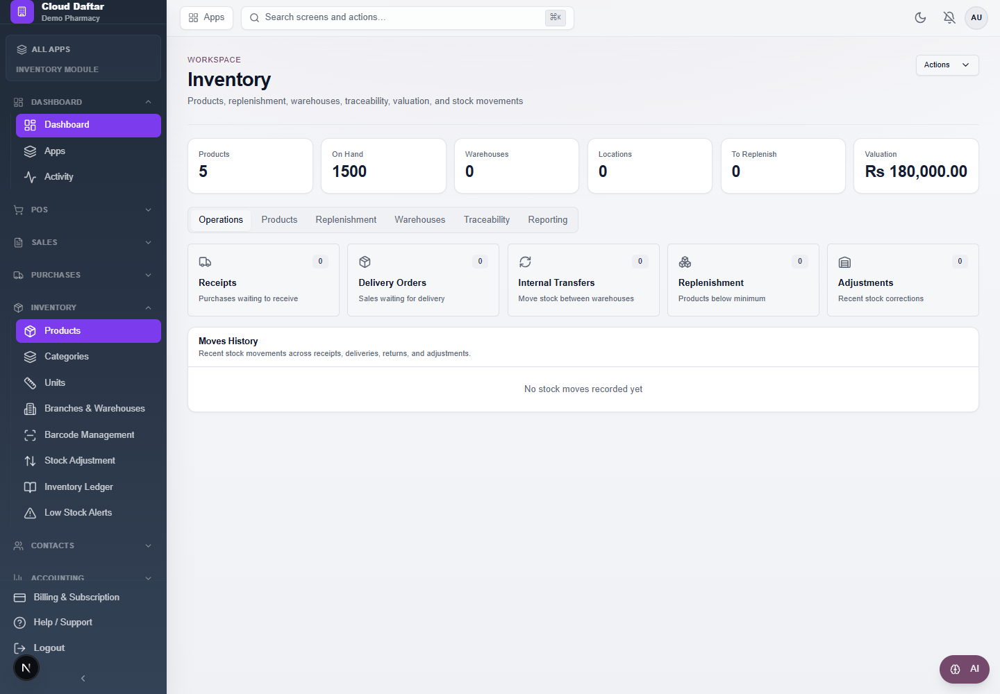
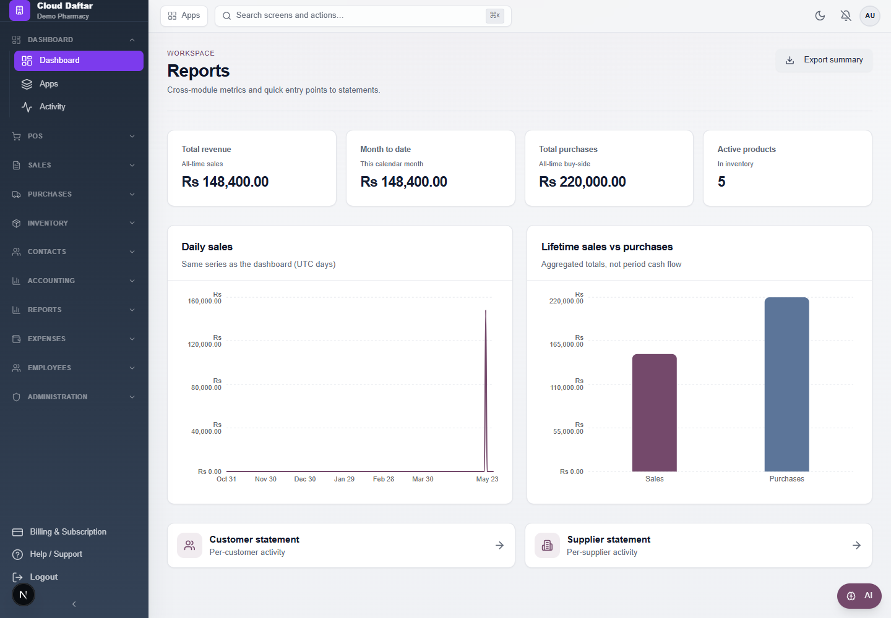
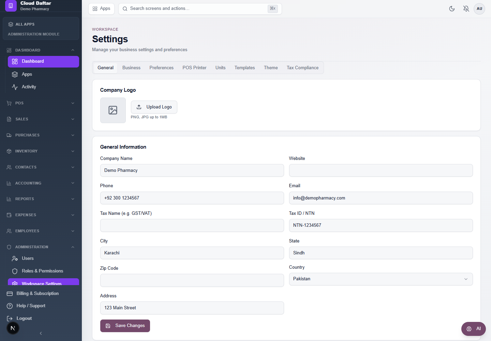
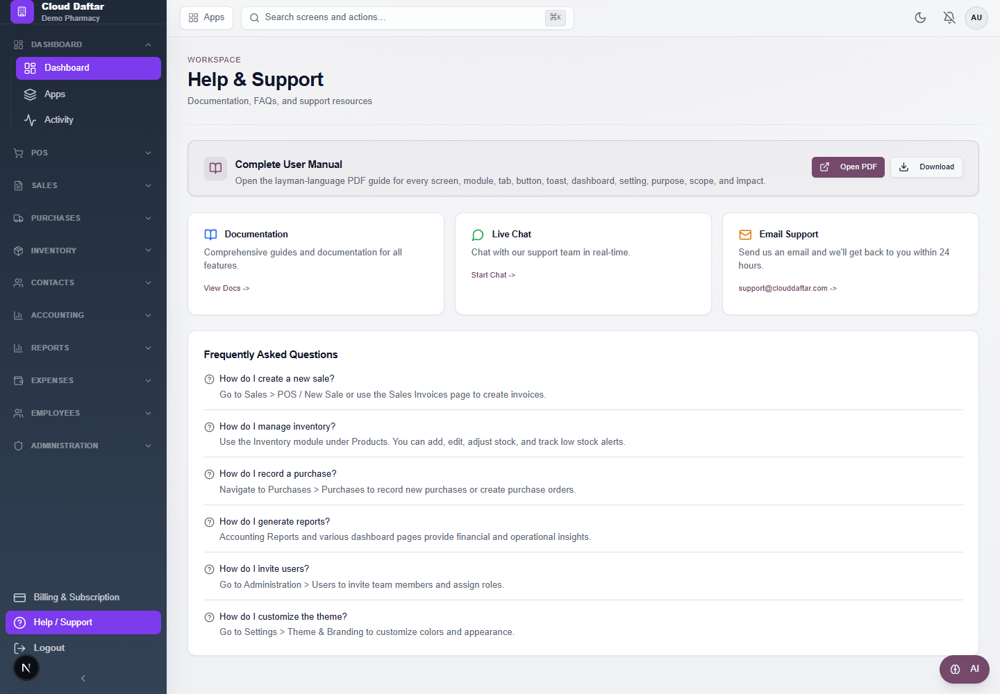

A layman-language guide for every major screen, module, tab, button type, toast message, dashboard, setting, and administration area.
This manual explains Cloud Daftar in simple business language. Each module includes purpose, scope, and impact.
| Term | Meaning |
|---|---|
| Purpose | Why this screen exists. |
| Scope | What this screen or module can handle. |
| Impact | What changes in the business when a user works here. |
| Toast | A small message that appears after an action, such as saved successfully or failed. |
| Permission | A rule that decides whether a user can view, create, edit, delete, approve, export, or manage something. |
The sidebar groups the system into business areas. The top bar also provides search, notifications, theme, profile, settings, billing, and sign out shortcuts.
| Sidebar Group | Screens |
|---|---|
| Dashboard | Dashboard, Apps, Activity |
| POS | POS Register |
| Sales | Sales Invoices, Customer Payments, Returns, Quotations, Customer Statements |
| Purchases | Purchases, Purchase Orders, Supplier Payments, Purchase Returns, Supplier Statements |
| Inventory | Products, Categories, Units, Branches & Warehouses, Barcode Management, Stock Adjustment, Inventory Ledger, Low Stock Alerts |
| Contacts | Customers, Suppliers |
| Accounting | Dashboard, Expenses, Customer Invoices, Vendor Bills, Income / Expense, Cash Flow, Chart of Accounts, Journal Entries, Financial Reports, Reports |
| Reports | Sales Reports, Purchase Reports, Inventory Reports, Tax / VAT Reports, Receivable Aging, Payable Aging |
| Expenses | My Expenses |
| Employees | Employees, Payroll |
| Administration | Users, Roles & Permissions, Workspace Settings, Invoice Templates, Theme & Branding |
| Bottom Menu | Billing & Subscription, Help / Support, Logout |
| Control | Layman Explanation |
|---|---|
| Search box | Type part of a name, number, SKU, barcode, invoice, customer, supplier, or setting to narrow the list. |
| Add/New button | Opens a form to create a record. The record is not saved until Save/Create/Submit is clicked. |
| Edit button | Opens an existing record so allowed fields can be changed. |
| Delete/Remove button | Removes or deactivates a record. Use carefully because some records affect reports and history. |
| Save/Create/Submit button | Checks the form and stores the information. |
| Cancel/Close button | Leaves the dialog without saving current unsaved changes. |
| Export CSV/Excel | Downloads table data so it can be opened in Excel or shared with an accountant. |
| Print/PDF | Creates a printable document for customers, suppliers, or internal records. |
| Filter button | Applies selected dates, status, product, customer, supplier, or type filters. |
| Previous/Next page | Moves through long lists without loading everything at once. |
| Switch/toggle | Turns a setting on or off. |
| Select/dropdown | Lets the user choose one value from a list. |
| Tabs | Divide one module into related sub-sections without leaving the screen. |
| Dialog/modal | A smaller window for quick create, edit, confirmation, or detail work. |
| Toast message | A temporary popup showing success, warning, or error after an action. |
| Toast Type | Meaning | What To Do |
|---|---|---|
| Success | The action worked. | Continue with the next task. |
| Error | The action failed or required information is missing. | Read the message, correct the form, check permissions, or try again. |
| Warning/Disabled button | The action is not available yet. | Complete required fields, select records, or ask an admin for permission. |
| Loading/Saving | The system is working. | Wait until the button becomes active again. |
These screenshots show the actual Cloud Daftar interface from the demo workspace. They help users match this manual with what they see on screen.









Lets a registered user enter Cloud Daftar.
Email/password login, Google sign-in where enabled, rememberable sessions, forgot-password link, and redirect to the correct workspace.
Controls who can access company data. A failed login keeps business information protected; a successful login opens the user's permitted screens.
None on this screen.
Gives owners and managers a quick health check of the business.
Total sales, month-to-date sales, products, customers, daily sales chart, purchases this month, recent sales, low-stock products, and shortcut buttons.
Helps the user spot sales movement, stock risk, and recent transactions before opening detailed modules.
None on this screen.
None on this screen.
Shows the available business modules as app cards.
POS, Sales, Purchases, Inventory, Contacts, Accounting, Expenses, Employees, Payroll, Reports, Branches & Warehouses, Templates, and Settings.
Acts as a simple launchpad for users who prefer choosing modules visually instead of using the sidebar.
None on this screen.
None on this screen.
Shows important actions performed in the workspace.
User activity, admin actions, changed records, timestamps, and audit filtering where available.
Improves accountability and helps investigate who changed business records.
None on this screen.
None on this screen.
Lets a cashier make quick counter sales.
Product search, barcode scan, category filter, cart, quantity/discount/price keypad, customer selection, payment method, paid amount, change, due amount, notes, draft sale, complete sale, receipt printing, fullscreen mode.
Creates invoices immediately, reduces manual entry at the counter, updates stock, records payment, and can print thermal receipts.
None on this screen.
Manages all customer invoices and sales history.
Invoice list, search by invoice/customer, invoice status, totals, paid and due amounts, due dates, detail drawer, edit invoice details, print, download PDF, refund, convert completed invoice back to draft where allowed, and export sales.
Keeps revenue records organized, supports payment tracking, and feeds receivables, reports, tax, and inventory movement.
None on this screen.
Records and reviews money received from customers.
Incoming payment list, filters, export, payment method, references, customer and invoice links.
Reduces outstanding receivables and keeps customer balances accurate.
None on this screen.
Shows refunded or cancelled sales.
Return list, search, status, customer, amount, date, and CSV export.
Keeps revenue corrections visible and helps reconcile returned goods or cancelled invoices.
None on this screen.
None on this screen.
Creates price offers before they become invoices.
Quotation list, search, create quotation, line items, customer, status, validity, print, PDF download, update, export CSV/Excel.
Supports sales follow-up without affecting stock or revenue until the customer accepts and the sale is created.
None on this screen.
Shows a customer's full transaction history.
Customer selection, date range, invoices, payments, opening/closing balance, CSV export, PDF download.
Helps answer customer balance questions and supports collections.
None on this screen.
None on this screen.
Records supplier purchases and bills.
Purchase list, supplier, items, cost, status, taxes, payments, new purchase dialog, and supplier linkage.
Updates stock costs, payables, supplier history, and purchase reports.
None on this screen.
Tracks purchase requests before final purchase billing.
Draft and approved purchase orders, suppliers, items, expected cost, and order status.
Improves purchasing control before inventory and payables are affected.
None on this screen.
None on this screen.
Records outgoing payments to suppliers.
Payment list, supplier invoices, selected bills, amount paid, payment method, notes, and export.
Reduces payables and keeps supplier balances correct.
None on this screen.
Shows returned or cancelled purchases.
Return list, supplier, purchase reference, status, amount, date, search, and export.
Keeps supplier corrections visible and helps inventory/accounting stay aligned.
None on this screen.
None on this screen.
Shows a supplier's full transaction history.
Supplier selection, date range, bills, payments, balances, CSV export, PDF download.
Helps verify vendor balances and payment disputes.
None on this screen.
None on this screen.
Manages products, stock levels, warehouses, traceability, and valuation.
Products, operations, replenishment, warehouses, traceability, reporting, product images, SKU/barcode, categories, units, price, stock, stock transfer, import, export, add lot/serial, stock ledger, and stock adjustment.
Controls what can be sold, where stock is stored, when to reorder, and how product movement is audited.
Groups products into simple product families.
Category name, description, color, create, edit, and save.
Makes product search, filtering, reporting, and POS category browsing easier.
None on this screen.
Defines product measuring units.
Unit name and symbol such as Kilogram/kg, Meter/m, Box/box.
Keeps sales, purchases, and inventory quantities clear and consistent.
None on this screen.
Sets up where stock is physically held.
Branches, warehouses, locations such as receiving, quality, shelves, packing, output, scrap, stock by warehouse, and replenishment guidance.
Enables location-wise stock control and cleaner transfers between shops, depots, and counters.
None on this screen.
None on this screen.
Supports barcode scanning, printing, and warehouse operations.
Scan barcode/SKU/location/operation, search products, assign barcode, print labels, export barcode product list.
Speeds up counter sales, receiving, picking, and stock lookup while reducing typing mistakes.
None on this screen.
Corrects product stock manually.
Product search, current stock, positive or negative adjustment quantity, reason/notes.
Fixes stock after damage, counting differences, samples, or missing items. It changes inventory numbers, so it should be used carefully.
None on this screen.
Shows every stock movement.
Product filter, movement type filter, date filters, sales/purchase/adjustment/transfer movements, CSV/Excel export.
Provides audit history for why stock increased or decreased.
None on this screen.
None on this screen.
Shows products below the minimum stock level.
Product search, low stock list, threshold comparison, and CSV export.
Helps prevent missed sales by warning the team before items run out.
None on this screen.
None on this screen.
Stores customer contact and business details.
Customer list, add customer, import customers, view customer profile, contact fields, tax/payment details where present.
Improves invoicing, payment collection, statements, and reporting by keeping customer records consistent.
None on this screen.
Stores supplier and vendor details.
Supplier list, add supplier, import suppliers, view supplier profile and related purchase/payment data.
Improves purchase entry, supplier statements, and payable tracking.
None on this screen.
Brings accounting work into one place.
Invoices, vendor bills, cash, reports, approvals, receivables, payables, expenses, and accounting shortcuts.
Helps finance users move quickly between money owed, money due, reports, and approvals.
None on this screen.
None on this screen.
Lets accounting review employee-submitted expenses.
Submitted expenses, receipt URL, categories, approval, rejection, reimbursement status.
Controls which expenses become company costs and which reimbursements are owed.
None on this screen.
Tracks money customers still owe.
Outstanding invoices, due dates, overdue amounts, reminders, invoice detail, receive payment, aging.
Improves collections and cash visibility.
None on this screen.
Tracks money owed to suppliers.
Vendor bills, due dates, overdue payables, supplier detail, supplier payment, payable aging.
Helps schedule payments and avoid missed vendor obligations.
None on this screen.
Compares income, costs, and profit.
Date filters, income, expense, profit/loss values, charts or tables, export where available.
Shows whether the business is making or losing money over a selected period.
None on this screen.
None on this screen.
Shows money coming in and going out.
Cash inflows, outflows, date range filters, exports, transaction drilldown.
Helps plan cash needs and identify tight periods.
None on this screen.
None on this screen.
Defines the account structure used by accounting.
Account code, name, type, parent account, description, create/edit/deactivate.
Controls how transactions are classified. Bad account setup can make reports confusing, so changes should be deliberate.
None on this screen.
Records manual accounting entries.
Date, description, journal type, reference, debit lines, credit lines, add/remove lines, post entry.
Directly affects financial accounts and reports. Entries must balance before posting.
None on this screen.
Produces core accounting reports.
General ledger, trial balance, financial statements, date filters, and CSV export.
Supports owner review, accountant checks, and period-end reporting.
None on this screen.
Generates operational accounting reports.
Aging report, collections, outstanding balances, payment history, and export.
Helps finance teams chase payments and understand collection/payment patterns.
Provides cross-module summaries and report shortcuts.
Revenue, month-to-date, purchases, products, customers, and links to sales, purchase, inventory, tax, customer statement, and supplier statement reports.
Turns daily business data into management-level information.
None on this screen.
None on this screen.
Lets staff submit expenses for approval.
Description, category, amount, date, receipt URL, status, and personal expense history.
Creates a clear reimbursement trail and gives accounting a review queue.
None on this screen.
Manages staff records and HR readiness.
Employee directory, departments, contracts, onboarding, reporting, retention, add employee, employee detail, equipment, certifications, role and branch assignment.
Keeps team information, responsibility, equipment, and HR status organized.
Manages salary contracts, payroll calculation, and payslip workflow.
Dashboard metrics, contracts, salary rules, work entries, adjustments, payslips, batches, compute payslips, verify/approve/pay/cancel, and exports.
Turns attendance, contracts, and adjustments into payroll records. It affects employee pay and accounting costs.
Controls who can use the workspace.
Team member list, create user, role assignment, branch assignment, activate/deactivate, reset password, custom permissions, remove member.
Protects data and controls what each person can see or change.
None on this screen.
Builds reusable access presets.
Role presets, custom groups, module-level access, tab-level control, action permissions, reset role, save permissions.
Makes access management consistent and reduces accidental over-permissioning.
None on this screen.
Configures the workspace's business identity and operating rules.
Company profile, business tax/locality, preferences, POS printer, units, templates, theme, and tax compliance.
Changes how documents look, how numbers are generated, how tax is calculated, how stock behaves, and how users experience the app.
Stores public company identity.
Company name, phone, email, website, address, city, state, zip, country, and logo.
Appears on invoices, quotations, receipts, and business documents.
None on this screen.
Stores tax, currency, timezone, and fiscal rules.
Tax ID, tax name, tax rate, currency, currency symbol, timezone, date format, fiscal year start.
Affects invoice tax, report periods, currency display, and accounting dates.
None on this screen.
Controls document numbers, stock behavior, and display format.
Invoice, sales order, quotation, purchase order prefixes/suffixes, number length, default templates, low stock threshold, payment method, default tax, SKU prefix, auto SKU, barcode scanning, negative stock, expiry tracking, separators, decimals, and language.
Shapes daily workflows. For example, enabling negative stock allows selling below zero; changing prefixes affects future document numbers.
None on this screen.
Connects Cloud Daftar to a local receipt printer bridge.
Enable bridge, bridge URL, HTTP or raw TCP mode, printer name, paper width, code page, copies, timeout, auto-print receipts, cash drawer, cut paper, auth token.
Controls whether receipts print automatically and how the physical printer behaves at checkout.
None on this screen.
Controls invoice, quotation, receipt, and label appearance.
Template list, create/edit template, duplicate, delete, set default invoice/thermal/quotation templates, preview and layout settings.
Changes customer-facing documents and printed output.
None on this screen.
Changes the app's visual style.
Sidebar color, sidebar style, primary color, accent color, font, border radius, layout density, and dark mode.
Improves brand fit and comfort for users without changing business data.
None on this screen.
Configures tax invoice integrations.
Compliance mode None/FBR/ZATCA, FBR username/password/POS ID, ZATCA enable switch, mode local/simulation/production, seller VAT, seller name, branch, CR number, address, device name, OTP, CSR generation, device onboarding, test connection.
Affects tax invoice data and compliance output. Production tax settings should be changed only by authorized finance/admin users.
None on this screen.
Shows plan, invoices, payments, and auto-renew status.
Current plan, subscription dates, invoice history, payment history, auto-renew settings, upgrade/renew flow where enabled.
Controls whether the workspace remains active and which plan features are available.
None on this screen.
None on this screen.
Lets the current user manage personal details and password.
Name, email display, profile save, current password, new password, confirm password.
Keeps user identity current and protects access through password changes.
None on this screen.
Shows system messages and reminders.
Unread/read notifications, mark all as read, notification links, overdue checks.
Keeps users aware of overdue payments, stock issues, subscription notices, and system events.
None on this screen.
Tracks follow-ups and promised payment dates.
Payment reminder list, commitments, follow-up status, linked customers/suppliers/invoices where available.
Improves collection discipline and reduces forgotten follow-ups.
None on this screen.
None on this screen.
Gives users support entry points.
Documentation link, chat/support link, support email.
Reduces training friction and gives users a place to ask for help.
None on this screen.
None on this screen.
Lets platform administrators manage the SaaS system.
Admin dashboard, plans, payments, tenants, tenant details, admins, audit log, branding, AI settings, subscription actions, payment approval/rejection.
Affects all tenant companies, subscription access, app branding, and platform-level administration.
Cloud Daftar uses permissions so every user sees only what they need. Owners normally have full access. Admins and managers may have broad access. Staff and cashiers usually have limited access for daily operations.
| Permission Area | What It Controls | Business Impact |
|---|---|---|
| Dashboard | Viewing summary metrics. | Lets users monitor the business without changing data. |
| Inventory | Products, stock, categories, adjustments, deletes. | Affects what can be sold and reported as available. |
| Sales | Invoices, POS, returns, edits, deletes. | Affects revenue, customer balances, stock, and tax records. |
| Purchases | Supplier bills, purchase orders, approvals, drafts. | Affects inventory cost and supplier balances. |
| Customers/Suppliers | Contact creation, editing, and deletion. | Affects invoices, purchases, payments, and statements. |
| Reports | Viewing and exporting reports. | Controls who can see sensitive business performance data. |
| Accounting | Receivables, payables, reconciliation, reports, journals. | Affects financial records and accountant review. |
| Expenses | Submitting and approving expenses. | Affects reimbursements and company costs. |
| Employees/Payroll | HR records, contracts, payslips, batches. | Affects employee data and salary workflows. |
| Users/Settings/Billing | Team access, workspace setup, subscription. | Affects security, document behavior, branding, and plan access. |